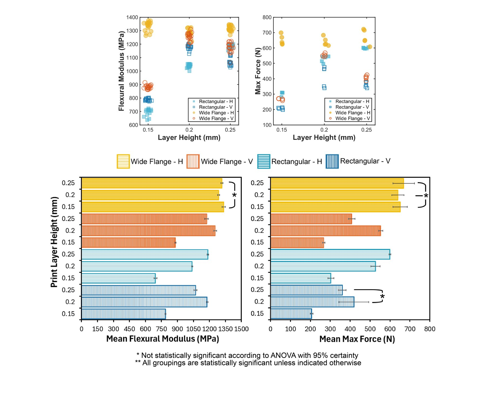
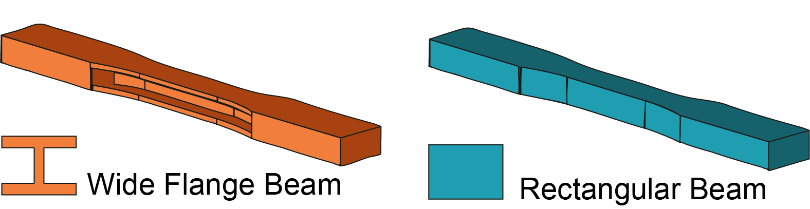
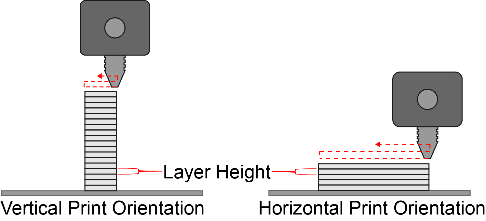
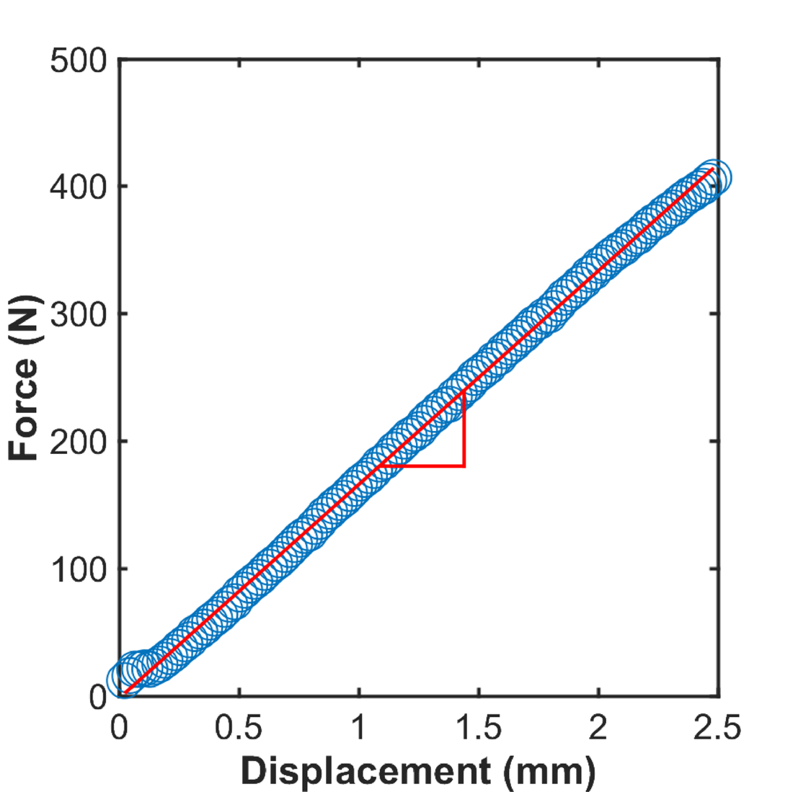
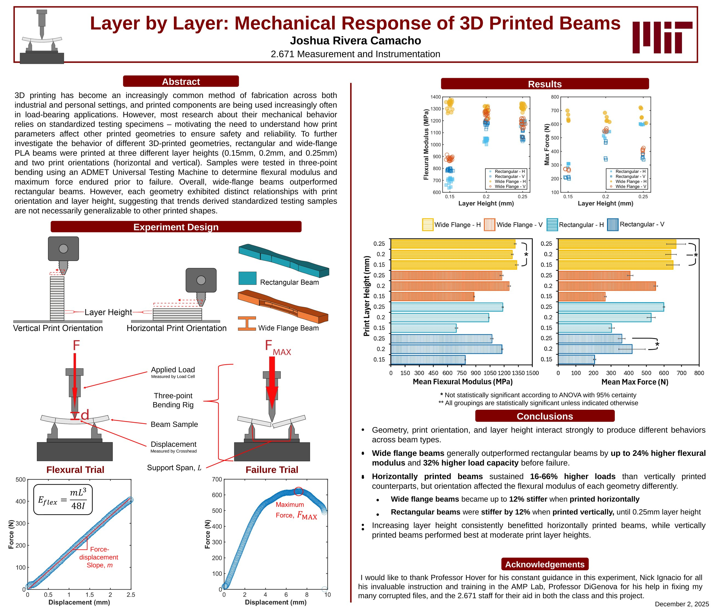
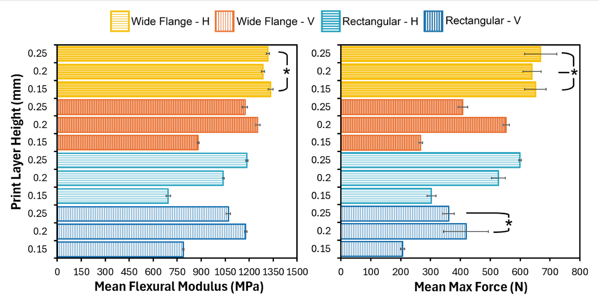
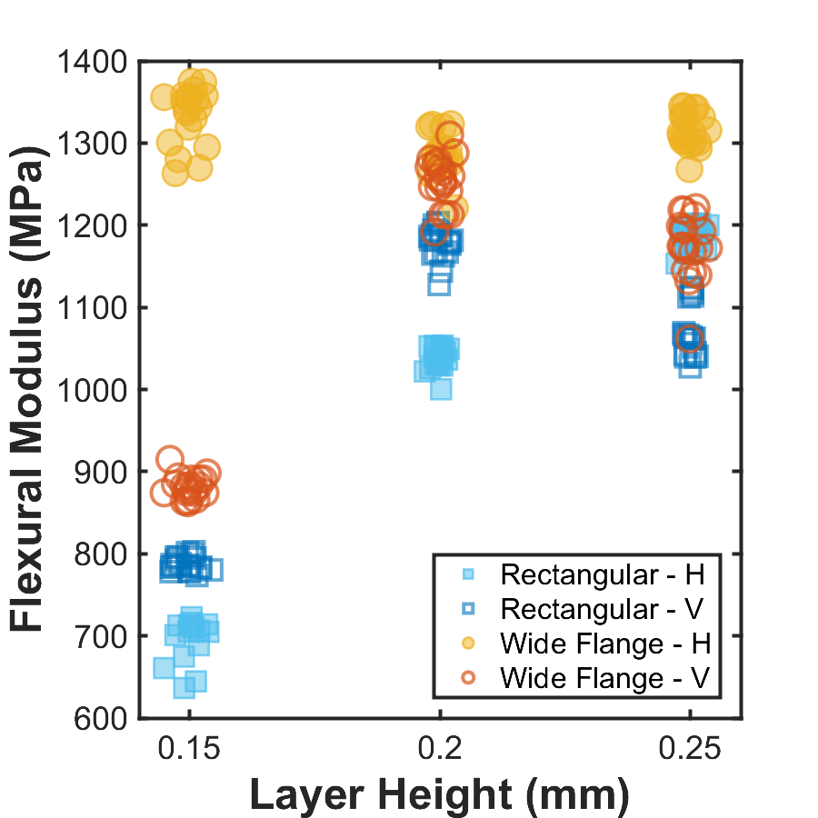
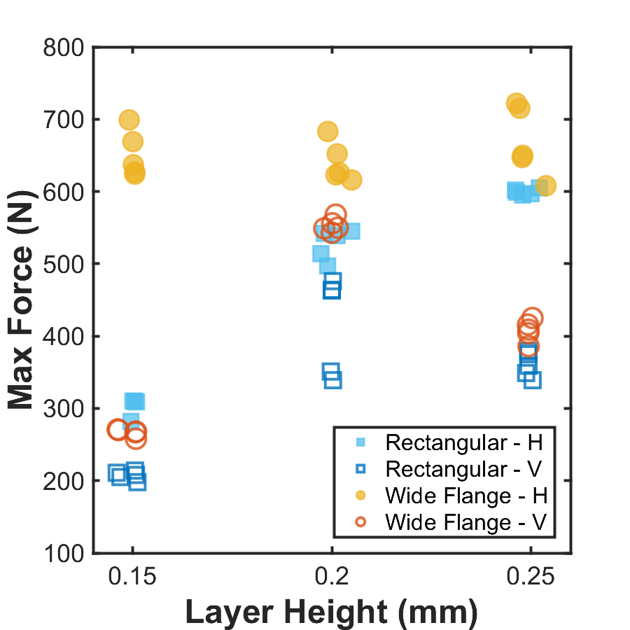
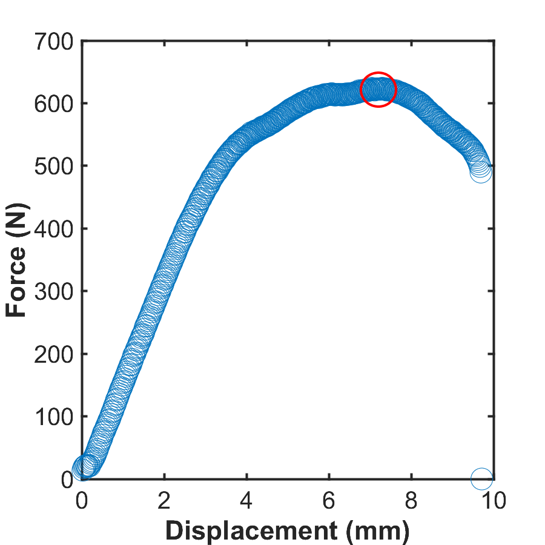

Layer by Layer: Mechanical Response of 3D Printed Beams

Experiment design
Data analysis
Technical communication
2.671: Measurement and Instrumentation
Fall Semester 2025
ADMET/Instron universal testing machine
MATLAB
Excel
Adobe Illustrator
SOLIDWORKS
FDM 3D printing
I designed, ran, and analyzed a three-point bending experiment on FDM-printed beams to study how cross-sectional geometry interacts with print orientation and layer height. Wide-flange beams outperformed rectangular ones by up to 24% in flexural modulus and 32% in load capacity — but each geometry responded differently to orientation and layer height. The work culminated in a flash talk, a poster, and a research paper. View my paper and poster linked here, or continue below to learn about the design decisions that drove this project.
Context/Motivation
2.671: Measurement and Instrumentation introduces testing and data-analysis instruments through weekly labs. At the same time, each student runs an independent research project end to end: choosing a topic, reviewing the literature, designing the setup, executing the experiment, analyzing the data, and interpreting the results — culminating in a flash talk, a poster session, and a final paper.
Problem Framing
3D-printed parts are increasingly used in load-bearing applications, but most of what we know about their mechanical behavior comes from standardized test samples that don't resemble many printed geometries. Having relied heavily on FDM printing in my own projects, I wanted to know whether those trends hold for other cross-sections — and how much print orientation and layer height change the answer.
Process
Standardizing test samples

To compare geometries fairly, I used a 19 × 14 mm rectangular beam based on ASTM D638 and designed a wide-flange beam with the same bending moment of inertia (≈4,345 mm⁴), so any difference in response would come from the shape rather than its stiffness on paper. Fixing the flanges at 19 × 3 mm and the web height at 9 mm, I wrote a MATLAB script to solve for the web width that matched the two: 2.55 mm.
- b
- the beam width (19 mm)
- h
- the beam height (14 mm)
- Ii
- the moment of inertia of each flange and the web about its own centroid
- Ai
- its area
- di
- the distance from its centroid to the beam's centroid
- tw
- the web height (9 mm)
- dw
- the distance from the web's centroid to the beam's centroid
Determining variables

To stay within the class's scope, I crossed the two geometries with the two most common print orientations (horizontal and vertical) and three common layer heights: 0.15 mm ("fine"), 0.20 mm (standard), and 0.25 mm ("rough," usually reserved for quick prints). That made 12 conditions with five specimens each — 60 beams in total, each tested in three-point bending for flexural modulus and maximum load before failure.
Automating the analysis

I wrote MATLAB scripts to process every test the same way. Each script parsed the file name for geometry, layer height, and print orientation; fit the linear regime of the load–displacement curve; matched the beam's measured moment of inertia; and computed flexural modulus from the three-point bending relation E = L³m / 48I over a 120 mm span. A second script found peak load the same way, and both grouped results by condition with means and standard deviations.
- L
- the support span (120 mm)
- m
- the slope of the linear regime of the load–displacement curve
- I
- the beam's measured moment of inertia
Rescuing corrupted data files
Transferring 200+ raw Instron data files to Excel was already a Sisyphean task — and then, for reasons I never pinned down, the formatting on nearly every file came out corrupted. Instead of fixing them by hand, I wrote a MATLAB script to clean them in bulk.
Room for Improvement
This project could have branched in many directions I'd have loved to explore: intermediate print angles between horizontal and vertical, different infill patterns, or other processes like SLA and SLS. My study was thorough — arguably more than the class demanded — with many specimens and trials to extract as much data as possible and minimize noise. In hindsight, some of that effort would have been better spent adding conditions, like print angle, infill pattern, or printing method.
Outcome
- Wide-flange beams: up to 24% higher flexural modulus and 32% higher load capacity than rectangular beams
- Horizontally printed beams sustained 16–66% higher loads than vertical ones
- Orientation affected stiffness in opposite ways: wide-flange beams were up to 12% stiffer printed horizontally; rectangular beams were 12% stiffer printed vertically, up to 0.25 mm layer height
- Thicker layers consistently helped horizontal beams; vertical beams performed best at moderate layer heights





Reflection
This project taught me how much an experiment's value depends on its design: how to judge the validity of data, and how to set up a study that produces the most useful, trustworthy data possible.